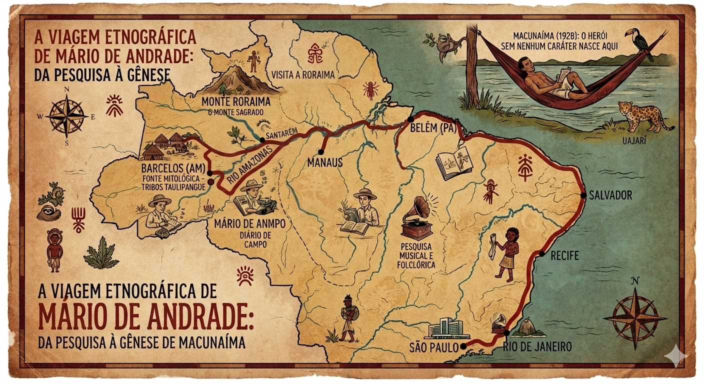

Macunaíma: do ponto de vista da Geografia...
O Mapa da "Brasilidade"
Mário de Andrade não escreveu Macunaíma trancado em um escritório. Entre 1927 e 1929, ele se tornou o "Turista Aprendiz", viajando pelo Rio Amazonas até o Peru e percorrendo o Nordeste brasileiro para registrar músicas, lendas e o falar do povo. O mapa abaixo mostra o itinerário dessas viagens etnográficas, que serviram de alicerce para a criação da obra:

Itinerário das viagens de pesquisa de Mário de Andrade pelo Brasil Profundo.
Rompendo com os "Arquipélagos Regionais"
Na década de 1920, o Brasil era visto como um conjunto de "arquipélagos regionais" — porções de terra isoladas que quase não se comunicavam. Através das andanças de Macunaíma, o autor promove uma integração simbólica do território, conectando o "mato virgem" do Norte ao progresso técnico do Sudeste.
Território, Mito e Identidade
Para a Geografia, o território é um espaço moldado pela cultura. Em Macunaíma, o Brasil assume sua face real: um mosaico híbrido onde a natureza tropical e as tradições indígenas, negras e luso-brasileiras se fundem. Ao acompanhar a jornada do herói, o leitor percebe que a identidade nacional é um processo em constante construção.